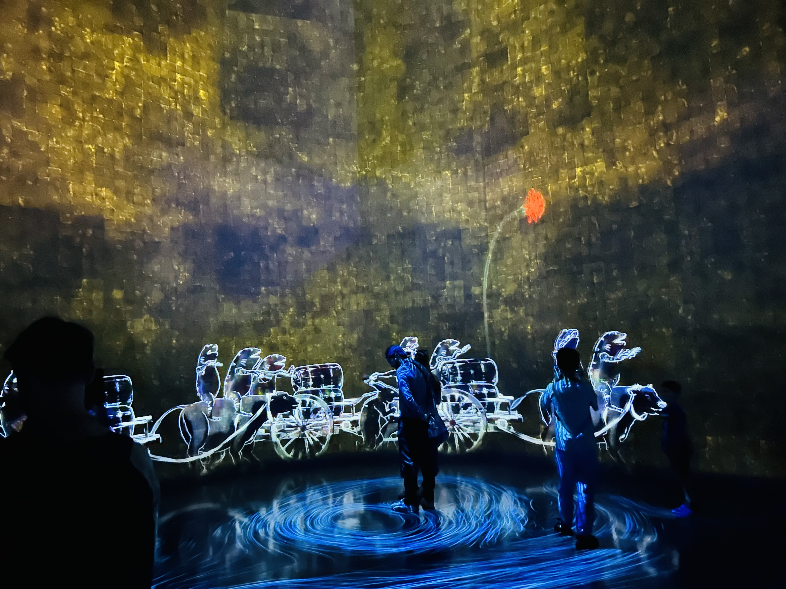
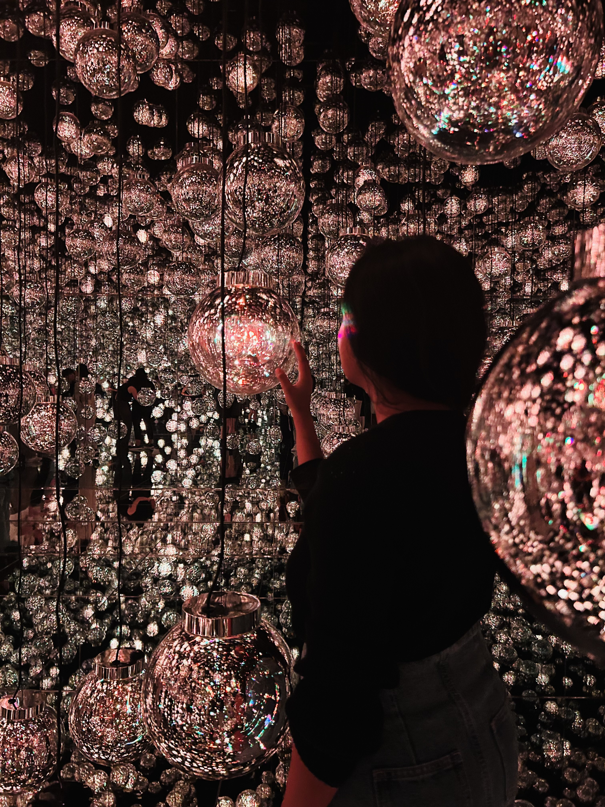
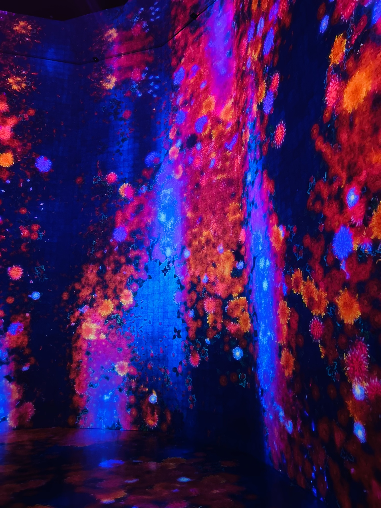
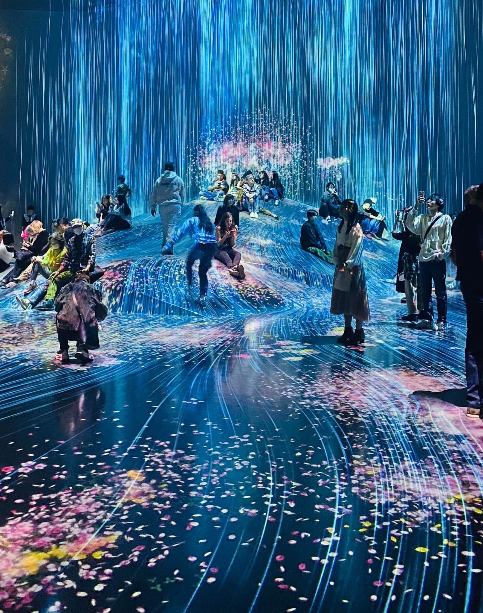
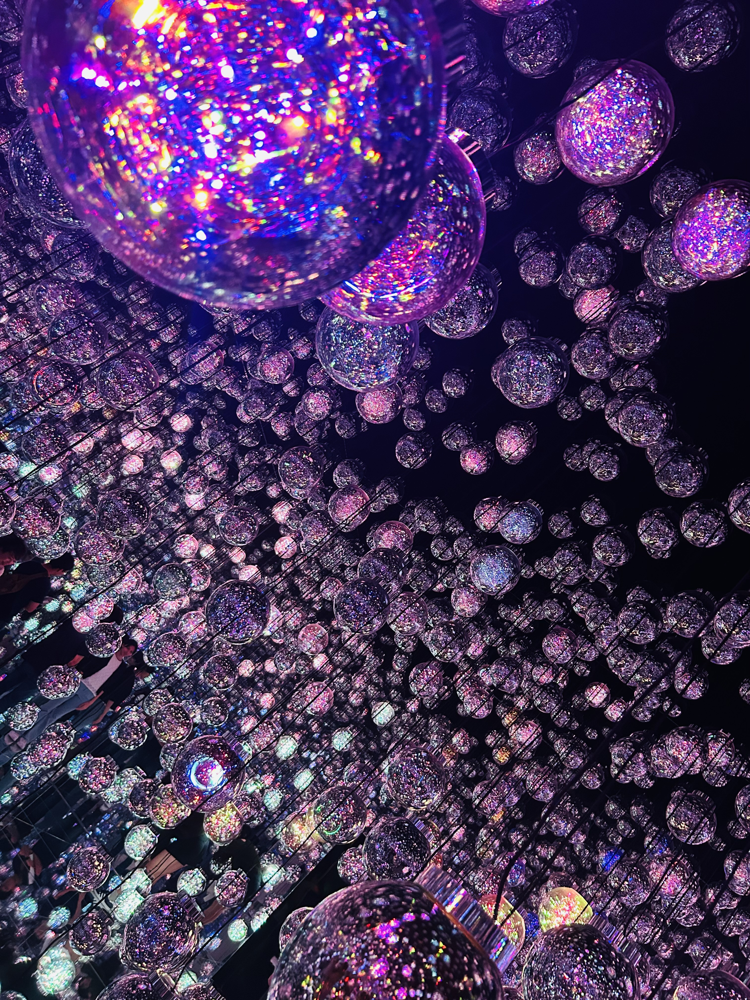
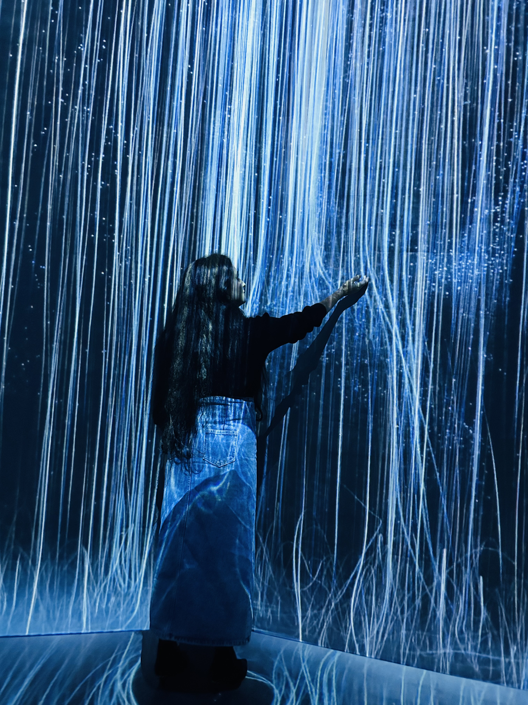

A world of art without borders
TeamLabs Borderless is an immersive digital art museum where light, sound, and motion flow endlessly across spaces. Art escapes boundaries, inviting visitors into a continuously evolving world of wonder.
Artworks move freely between rooms, merging spaces into a single living world.
Movement and presence influence colors, patterns, and sound.
Inspired by flowers, water, seasons, and light.






There is no map and no correct path. Wander freely, lose yourself in light and sound, and experience a world that responds uniquely to every step you take.
Trade LEDs for lanterns during the February cherry blossom festival in Kanagawa.
Read GuideEnjoy real-world color gradients as ginkgo trees and cosmos fields glow in autumn.
Read GuidePair artful illuminations with Mount Fuji silhouettes and maple corridors.
Read Guide